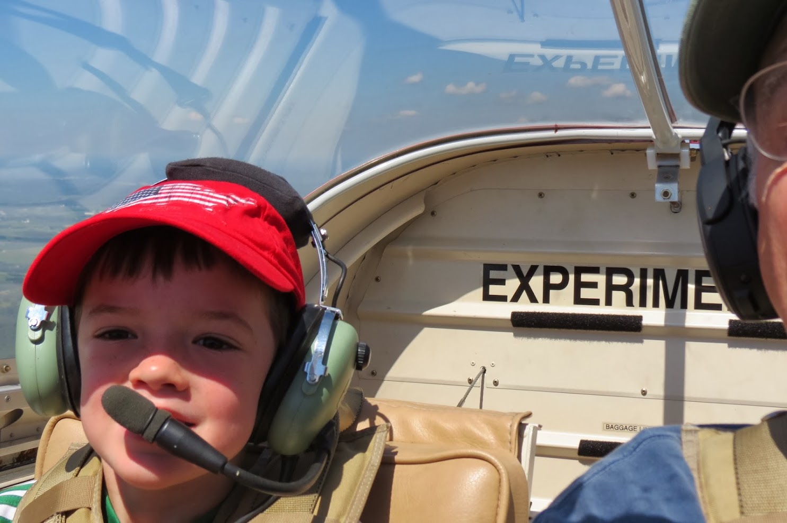
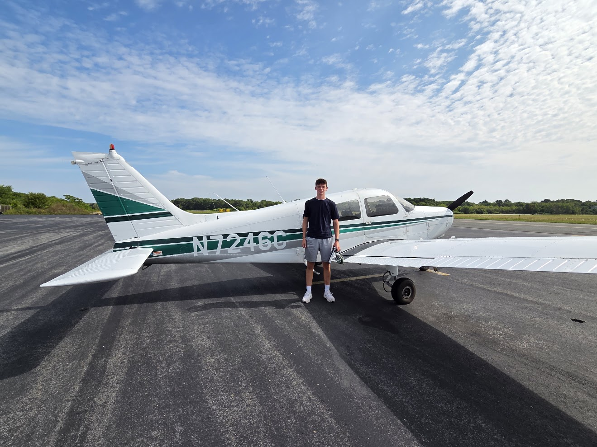
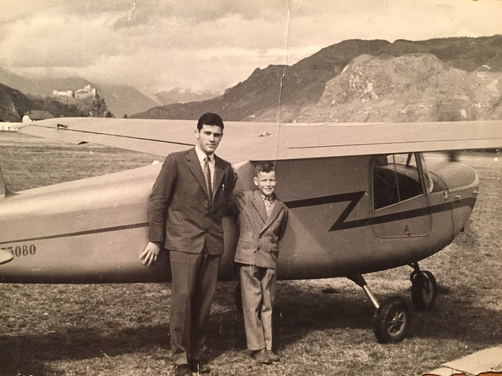
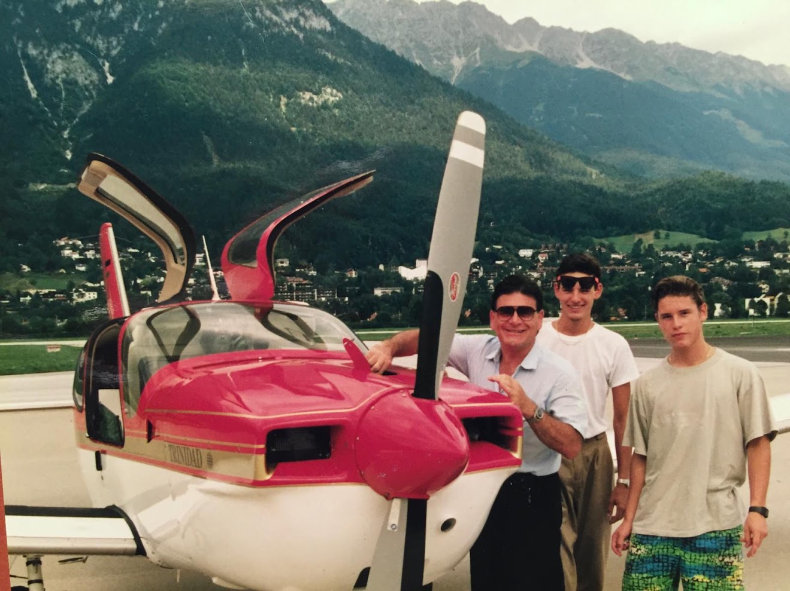
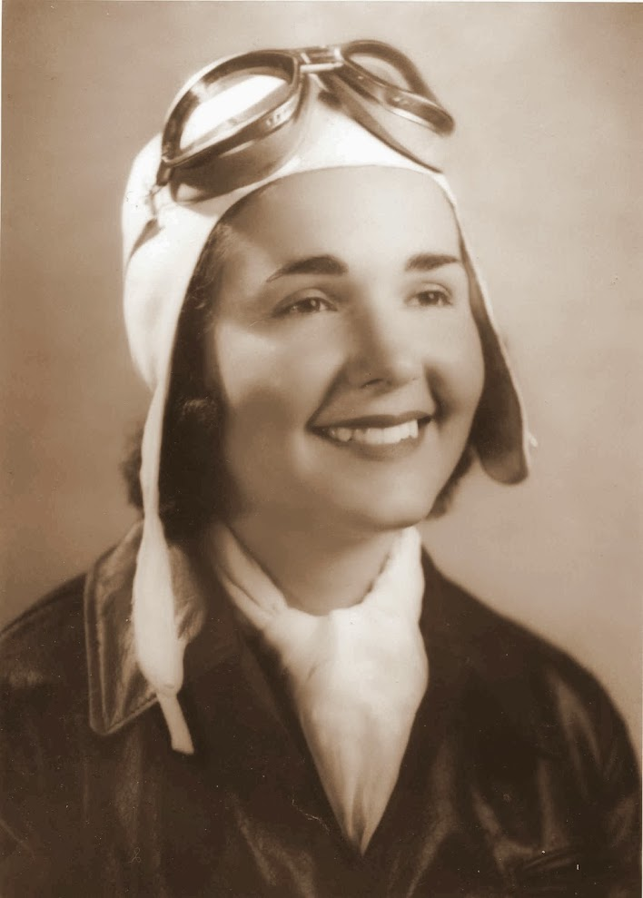
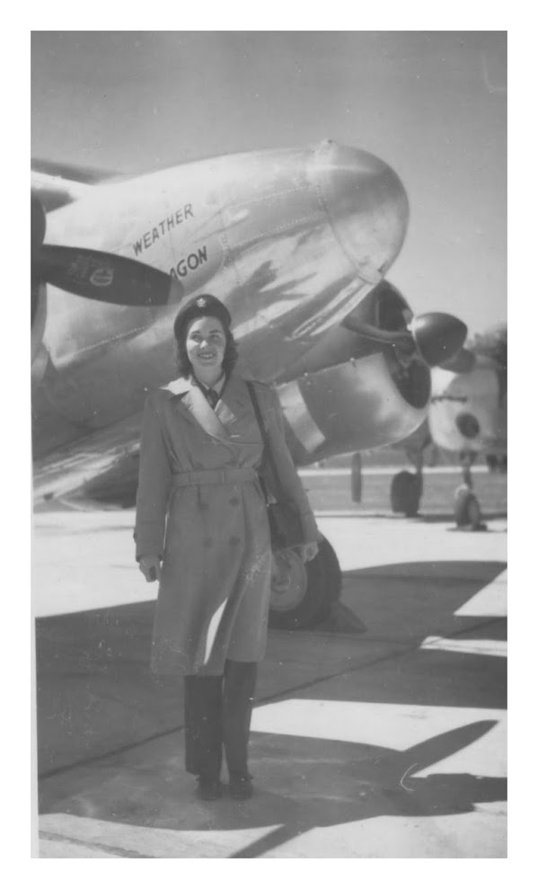
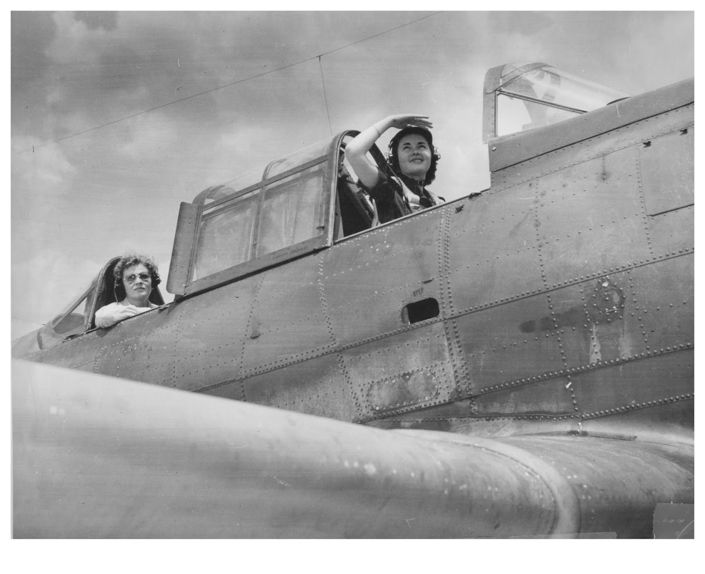
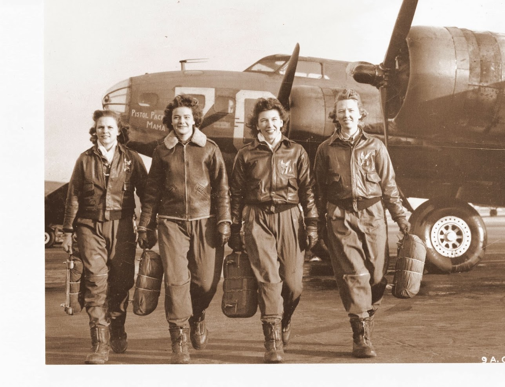

I find inspiration doing anything related to robotics. I have extensive hands-on experience with CAD, 3D printing, laser cutting, woodworking, and a range of other engineering tools — and I bring the same hands-on approach to the air as I do to the shop.
College of Engineering. Studying towards a Mechanical Engineering major with a minor in Aerospace Engineering.
Helped streamline the technological and organizational side of a private contractor managing multiple sites — organizing construction efforts, IT support, and communication between crews and material providers.
Trained and coordinated a machine-learning model to recognize hand, face, and body gestures. The result was a patented, functioning model that could program a car to respond to gestures using Clearmotion's active suspension technology.
Observed the design and construction industry in action, touring an MEP manufacturer, an architecture firm, a diversity consultant, and other stakeholders on active projects.
3.96 GPA. Graduated with 11 AP credits across various STEM fields.
Participating member — flies as a private pilot and helps advise other students interested in pursuing a pilot license.
Designing and manufacturing a functioning wind turbine for competition — blade shape, pitch control, and an emergency brake system in Onshape. See project →
Modeled parts in Onshape and designed solutions for a partially autonomous competition robot. See project →
Designed a fully autonomous LEGO robot and attachments to complete challenges on the game board. The team qualified for the state competition every year, winning an award each year.
Fluent in English (native) and biliterate in Italian.
Flying is the family trade, and it runs back four generations on both sides. My great-grandfather flew for the Italian military before Italy even had an air force. My great-grandmother flew for the U.S. Army Air Forces in the Second World War. My grandfather flew light singles out of Alpine strips, and two of Marie’s grandchildren went on to fly for the airlines. I hold a private certificate with an instrument rating in progress — a long way behind all of them, but on the same heading.




I fly single-engine airplanes as a private pilot and I'm working through the instrument rating now — the one that lets you fly in cloud on instruments alone, and the one that turns flying from a fair-weather activity into something you can actually plan a trip around. I'm a participating member of the Northeastern Aviation and Flight Club, where I also help advise other students who want to start working toward a license of their own.
My great-grandfather on my father’s side flew for the Italian military around 1919 — and at that point there was no Italian Air Force to fly for. Italian military aviation was the Corpo Aeronautico Militare, formed on 7 January 1915 as a branch of the Royal Army rather than a service in its own right. It did not become the independent Regia Aeronautica until 28 March 1923, four years later.
It was a serious outfit to have flown for. Italy had been the first nation in the world to use aircraft in war, over Libya in 1911, and by the end of the First World War it had built more than 12,000 aircraft — flying French fighters like the Nieuport and SPAD alongside the enormous Italian-built Caproni bombers. The corps he served in was the one the Regia Aeronautica was later built out of.
On the other side of the family, Marie Barrett Marsh — my great-grandmother — flew for the Weather Wing out of Asheville, North Carolina as one of the Women Airforce Service Pilots. Read about the WASPs →
Flying leaks into everything else I build. It’s the reason the aerospace minor is attached to the mechanical engineering degree, and it’s why the things I make in LEGO Technic keep turning out to be airplanes with working control surfaces rather than static models — once you’ve handled the real controls, a wing that doesn’t move stops being satisfying. See the floatplane →
My great-grandmother, E. Marie Barrett Marsh (1919–1997), flew for the U.S. Army Air Forces during the Second World War as one of the Women Airforce Service Pilots — the WASP. This is who she was, and what the WASP did.




She learned to fly before the war, earning her license through the Civilian Pilot Training Program in 1940 while at Youngstown College — one of two women in a class of twenty-nine. She was teaching math and science in Ohio schools when the call for women pilots went out.
She reported to Avenger Field in Sweetwater, Texas in May 1943 and graduated that November with class 43-W-7. Her assignment was Weather Wing headquarters at Asheville, North Carolina, flying the Wing’s leadership, running courier missions to the Pentagon, and flying mercy flights. Her records list the B-26 Marauder, the A-24 dive bomber, and the C-45, C-60 and UC-78 twins.
She married John Marsh in June 1944, raised eight children in Vienna, Ohio, and kept her license current, flying privately until cataract surgery grounded her at 58. Ohio inducted her into its Women’s Hall of Fame in 1999, two years after she died.
The WASP grew out of two separate 1942 experiments — Nancy Harkness Love’s ferrying squadron and Jacqueline Cochran’s training detachment — merged in August 1943 under Cochran. Their job was every domestic flying mission that did not need a combat crew, so that male pilots could be sent overseas: ferrying new aircraft from the factory, test-flying airframes fresh out of repair, instructing, and towing targets while anti-aircraft crews fired live rounds at the sleeve behind them.
Roughly 25,000 women applied, 1,830 were accepted for training, and 1,074 earned their wings. Between September 1942 and December 1944 they delivered 12,650 aircraft across 78 different types — from primary trainers up to the B-17 and the B-29 — and logged more than 60 million miles. Thirty-eight of them were killed doing it.
The WASP served as civilians for the entire war. When a WASP was killed there was no military funeral, no flag for the family, and no government money to send her home — the other women in her squadron paid for it themselves.
The program was disbanded on 20 December 1944, and for decades afterward its records sat archived and largely forgotten. Congress did not recognize WASP service as active military duty until 1977. The Congressional Gold Medal followed in 2009, accepted at the Capitol in March 2010 by the roughly 200 surviving members able to travel there — twelve years after Marie died. Her medal is held in a museum collection today.